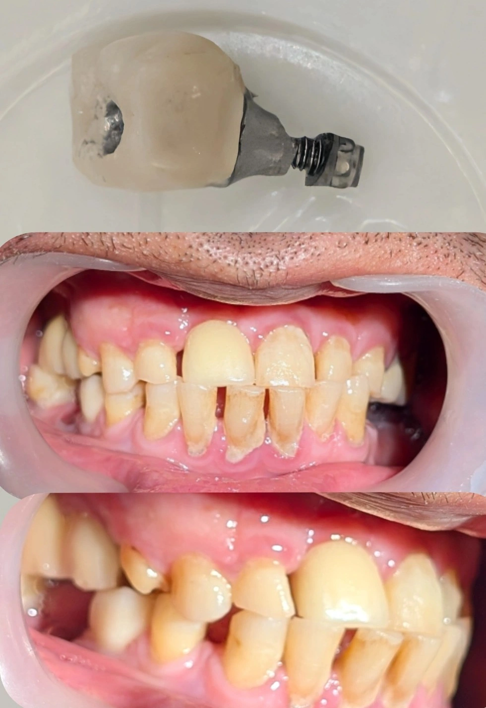

Chairside 23
شکست اباتمنت ایمپلنت بعد از ۹ سال؛ وقتی بیومکانیک فک قربانی غیبت دندانها میشود

مراجعی داشتم که ۹ سال پیش برای دندانِ ۶ پایینِ راست، ایمپلنت و روکش را برایش انجام داده بودم. اینبار با شکایتِ لقیِ روکش مراجعه کرد. نکتهی اول اینجا بود که بیمار اخیراً دندانِ ۵ همان سمت را در کلینیکِ دیگری ایمپلنت و روکش کرده بود و تصور میکرد لقی مربوط به همان دندانِ ۵ است. بررسی نشان داد منشأِ لقی، دندانِ ۶ (ایمپلنتِ قدیمی) است، نه دندانِ ۵.
برنامهی استاندارد روشن بود: ایجاد Access Hole روی روکش، دسترسی به پیچِ اباتمنت، خارج کردنِ پیچِ شلشده، تعویض با پیچِ نو و تحویلِ مجدد. مسیر را طبقِ همین برنامه پیش بردم، اما بعد از خارج کردنِ رستوریشن با یافتهی غیرمنتظرهای روبهرو شدم. پیچ صرفاً شل نشده بود، بلکه خودِ اباتمنت شکسته بود. شدتِ آسیب در تصویرِ قطعهی خارجشده کاملاً مشخص است.
برای ریشهیابی، وضعیتِ کلِ دهان را بهعنوانِ یک سیستمِ یکپارچه بررسی کردم. عواملِ زیر به این ترتیب کنارِ هم قرار گرفتند:
- نیروهای پارافانکشنال و سایشِ شدید. تمامِ دندانهای بیمار Attrition واضحی دارند، یعنی از ابتدا مستعدِ نیروهای سنگین و اکلوژنِ آسیبرسان بوده است.
- از دست رفتنِ دندانهای سمتِ مقابل. بیمار دندانهای پایینِ سمتِ چپ را حدودِ ۲ تا ۳ سال پیش از دست داده و جایگزین نکرده بود؛ در نتیجه بارِ جویدن بهطورِ ناخودآگاه به سمتِ راست منتقل شده است.
- عدمِ درگیریِ مؤثرِ ایمپلنتِ جدید (دندانِ ۵). روکشی که اخیراً همکارِ دیگری تحویل داده بود، تماسِ فعال و مؤثری با دندانهای مقابل نداشت.
- تمرکزِ نیرو روی دندانِ ۶. در کلِ سمتِ راست، جز روکشِ دندانِ ۶، فقط دندانِ ۷ تماس داشت، آن هم تماسی ضعیف در حدِ نیمی از سطحِ دندان.
نتیجهی بیومکانیکی این بود که نیروهای سنگینِ فک، بهجای پخش شدن در کلِ قوس، بهصورت متمرکز روی دندانِ ۶ وارد شده است. ابتدا پیچ شل شده، بیمار مدتی روی روکشِ لغزان جویده، و در نهایت فشار به حدی رسیده که ساختارِ فلزیِ اباتمنت شکسته است.
قدمهای بعدیِ درمان به این ترتیب است:
- ارزیابیِ دقیقِ فیکسچر؛ اطمینان از اینکه شکستگی به رزوههای داخلیِ فیکسچر آسیب نزده و پایهی درونِ استخوان سالم است.
- اصلاحِ اکلوژن و بیومکانیک؛ دندانِ ساییدهشدهی بالای سمتِ راست باید مجدداً واردِ اکلوژنِ درست شود تا بارِ نیروها تقسیم گردد — وگرنه صرفِ تعویضِ اباتمنت و ساختِ روکشِ تازه، همین شکست را تکرار میکند.
- درمانِ جامع؛ بیمار باید در اولین فرصت سمتِ چپِ خالیمانده را ایمپلنت کند تا بالانسِ جویدن در کلِ دهان برقرار شود.
️محیطِ دهان یک سیستمِ پویاست؛ از دست رفتنِ دندانها یا ترمیمِ غیراصولیِ سمتِ مقابل، شرایطِ بیومکانیکی را بدتر و تخریب را پیشرونده میکند.
️چکاپِ سالانهی ایمپلنت تشریفات نیست؛ جدی نگرفتنش یک شلشدگیِ سادهی پیچ را که با یک سفتکردن حل میشد، به شکستگیِ ساختاری و درمانِ پیچیده تبدیل میکند.
محتوای این صفحه برای استفادهٔ آموزشی دندانپزشکان و دانشجویان دندانپزشکی تهیه شده است.